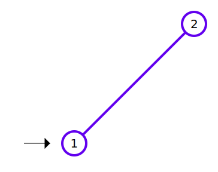
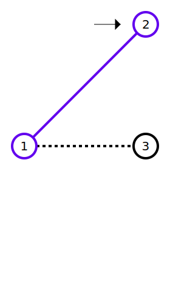
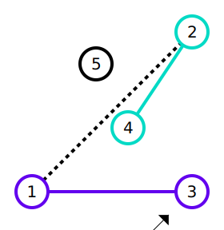
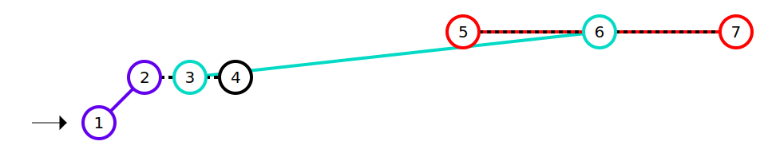
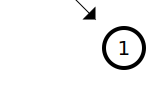

You are participating in an inter-galactic hyperspace golf competition, and you have advanced to the final round! You are really determined to triumph, and so you want to prepare a winning strategy.
In hyperspace golf, just as in conventional golf, you hit a ball with a club, which sends the ball in a direction chosen by you. The playing field in hyperspace golf is a 2-dimensional plane with points representing the different holes. The ball is also represented by a point, and you get to choose where the ball starts, as long as it is not in the same place as a hole.
Since this is hyperspace golf, the players are allowed to turn some pairs of holes into wormholes by linking them together. Each hole can be either left as a normal hole, or linked to at most one other hole (never to itself). Wormholes are undirected links, and can be traversed in either direction.
Because the environment is frictionless, when you hit the ball, it moves in a straight direction that it maintains forever unless it reaches a hole; call that hole h. Upon touching hole h, the ball stops if h is not connected to another hole. If h is connected to another hole h', then the ball immediately comes out of h' and continues moving in the same direction as before.
You know the location of each hole. You want to maximize the number of distinct holes you can touch with a single hit. With that goal in mind, you want to pick the ball's starting location, the direction in which to send the ball, and which pairs of holes, if any, to link together as wormholes. The ball cannot start in the same place as a wormhole. When the ball goes through a wormhole, both the hole it goes into and the hole it comes out of are counted towards your total. Each hole is only counted once, even if the ball goes into it or comes out of it (or both) multiple times. If the ball stops in a hole, that hole also counts toward your total.
The first line of the input gives the number of test cases, T. T test cases follow. Each case begins with one line containing a single integer N: the total number of holes. The following N lines contain two integers each: Xi and Yi, representing the X and Y coordinates, respectively, of the i-th hole.
For each test case, output one line containing Case #x: y, where x is the test case number (starting from 1) and y is the maximum number of distinct holes you can touch if you make optimal decisions as described above.
Time limit: 30 seconds per test set.
Memory limit: 1GB.
1 ≤ T ≤ 100.
-109 ≤ Xi ≤ 109, for all
i.
-109 ≤ Yi ≤ 109, for all
i.
(Xi, Yi) ≠ (Xj, Yj),
for all i ≠ j. (No two holes are at the same coordinates.)
1 ≤ N ≤ 7.
1 ≤ N ≤ 100.
5 2 0 0 5 5 3 0 0 5 5 5 0 5 0 0 5 5 5 0 3 2 2 4 7 0 0 1 1 2 1 3 1 8 2 11 2 14 2 1 -1000000000 1000000000
Case #1: 2 Case #2: 3 Case #3: 4 Case #4: 7 Case #5: 1
In Sample Case #1, we can connect the two holes with a wormhole so that we could touch both of them by sending the ball into either one. Notice that without the wormhole, the ball would just stay in the first hole it touches, so it would be impossible to touch more than one hole.

In Sample Case #2, we can connect the holes at (0, 0) and at (5, 5). We can then hit the ball from position (4.9, 5), for example, in the positive horizontal direction so that it first touches the hole at (5, 5). It goes into that hole and comes out of the hole at (0, 0), retaining its positive horizontal direction of movement. Finally, it touches the hole at (5, 0), and stops (since there is no wormhole linked to that hole).

In Sample Case #3, we can connect the pair of holes at positions (0, 0) and (5, 0), and also the pair of holes at positions (3, 2) and (5, 5). Hitting the ball from (4, -1) towards the hole at (5, 0) makes it touch the holes at positions (5, 0), (0, 0), (5, 5) and (3, 2), in that order.

In Sample Case #4, we can connect the pairs of holes at positions (0, 0) and (1, 1), the pair of holes at positions (2, 1) and (11, 2), and also the pair of holes at positions (8, 2) and (14, 2). Hitting the ball from (-1, 0) towards the hole at (0, 0) makes it touch the holes at the following positions, in this order: (0, 0), (1, 1), (2, 1), (11, 2), (14, 2), (8, 2), (11, 2), (2, 1), and (3, 1). Note that although the holes at positions (11, 2) and (2, 1) are touched twice, they are only counted once each for the answer, since the problem asks for a count of distinct holes.

In Sample Case #5, there is only one hole, and we can hit the ball into it without needing to consider wormholes at all. (For what it's worth, we can choose any starting location we want, even outside of the allowable range of coordinates for holes.)
